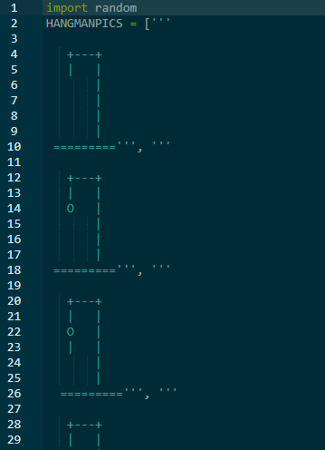
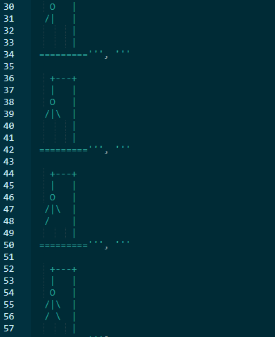
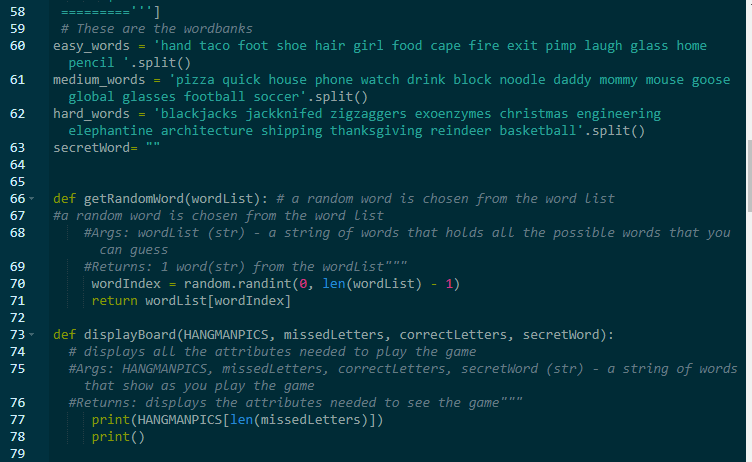
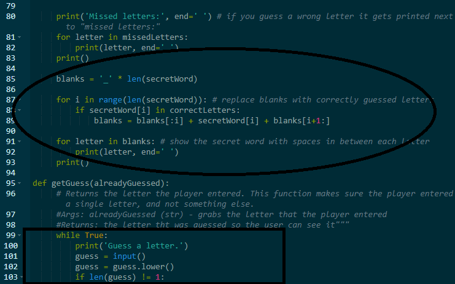
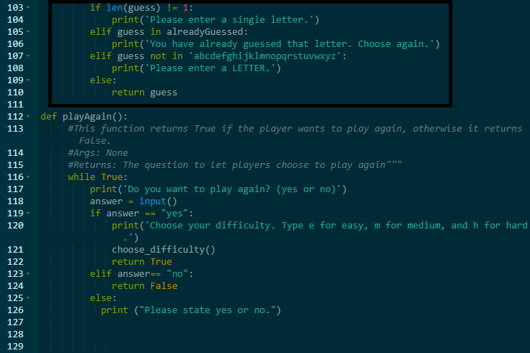
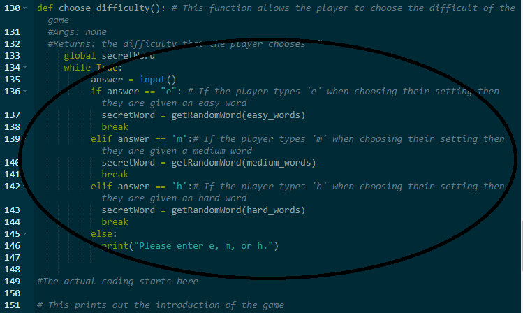
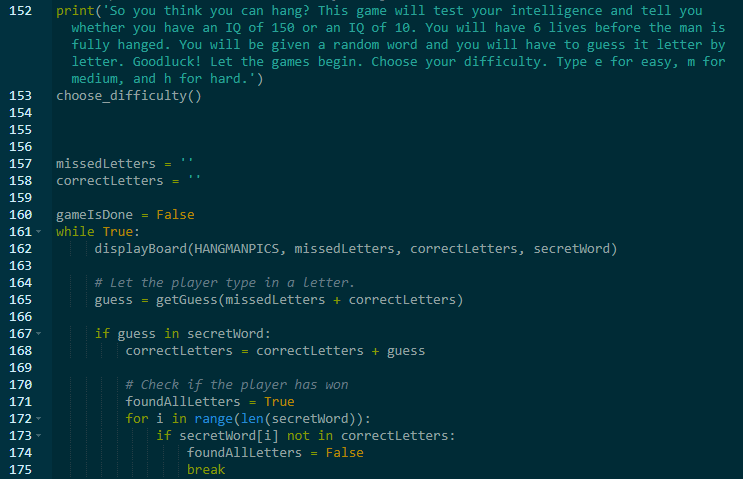
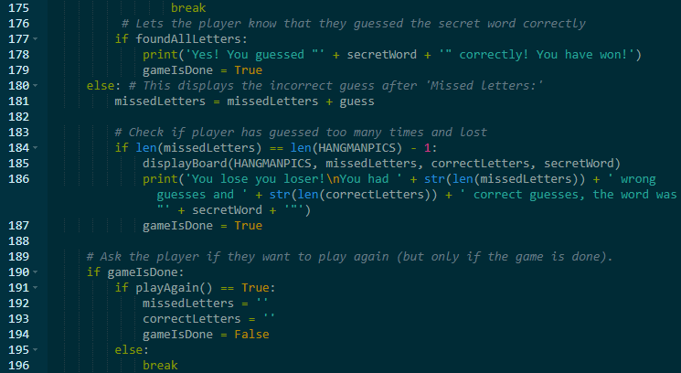

I recreated the game of Hangman on Repl.it. The following images are screen captures of the coding.
       Purpose of the Game
The purpose of the game is for the player to guess a word by entering letters into the program. With each incorrect guess, the man on the noose gains another limb until he has all 6 body parts and the player loses the game. One key feature of the game is the capability of selecting the difficult before guessing a word. Other key features include the drawings of the gallow and the man and as well as being able to choose whether or not to play again.